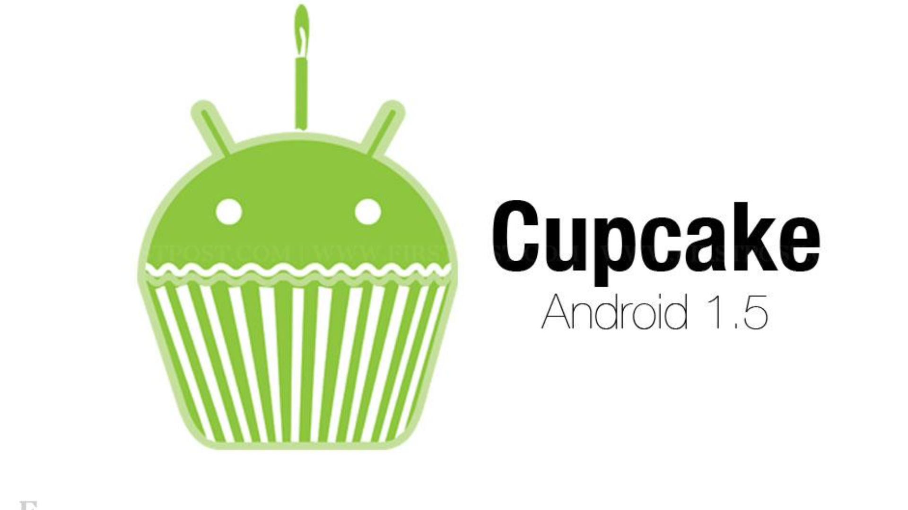
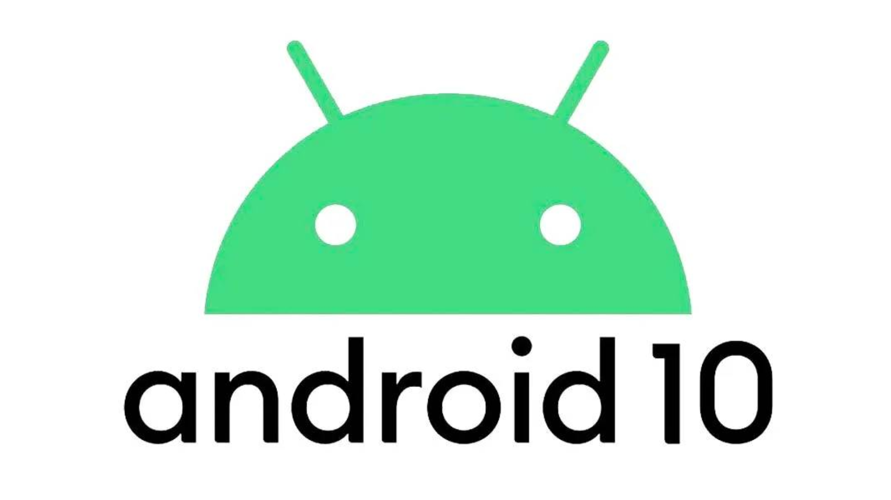
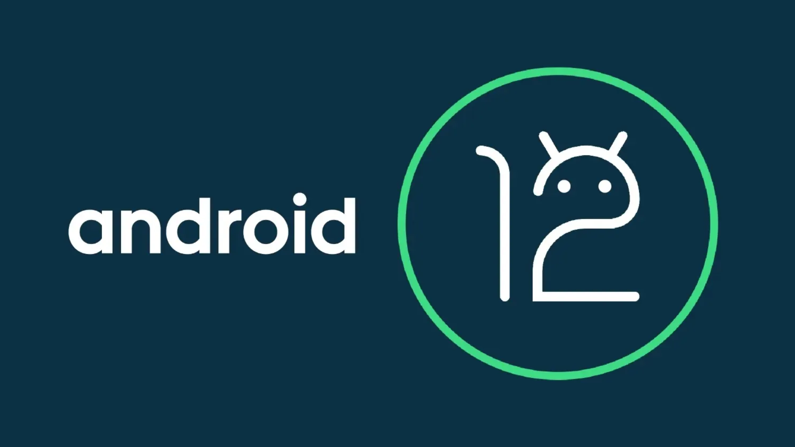
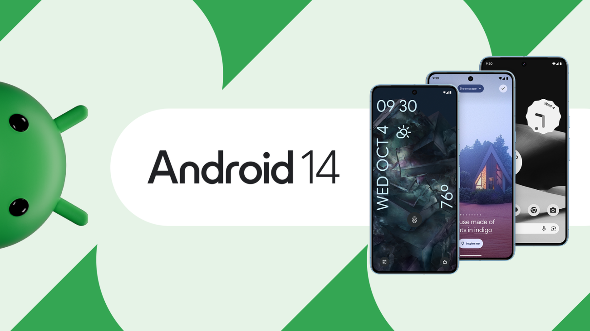

Android
O Android é um sistema operacional desenvolvido pelo Google para dispositivos móveis. O software é responsável por gerenciar todas as tarefas do seu celular, além de fornecer uma interface visual para que seja possível sua utilização pelo usuário.
Características
- Código Aberto: O Android é construído sobre um núcleo de código aberto, permitindo personalização por fabricantes, desenvolvedores e entusiastas.
- Diversidade de Dispositivos: Android é utilizado em uma ampla variedade de dispositivos, incluindo smartphones, tablets, smart TVs, relógios inteligentes e outros dispositivos conectados.
- Google Play Store: A loja oficial oferece milhões de aplicativos, jogos, filmes e livros, proporcionando uma vasta gama de opções para os usuários.
- Integração com Serviços Google: Android se integra perfeitamente aos serviços do Google, como Gmail, Google Maps e Google Drive, proporcionando uma experiência integrada e consistente.
- Personalização: Os usuários podem personalizar a aparência e o comportamento de seus dispositivos Android, desde a escolha de papéis
Principais versões
- Android 1.5 (Cupcake): Lançado em 2009, marcou o início da série de atualizações do Android, introduzindo recursos como teclado virtual, capacidade de gravar vídeos e suporte a widgets.
- Android 4.4 (KitKat): Lançado em 2013, focou na otimização para dispositivos com recursos mais modestos, melhorando o desempenho e a eficiência energética.
- Android 6.0 (Marshmallow): Lançado em 2015, trouxe melhorias significativas na permissão de aplicativos, introduziu o modo Doze para economia de bateria e aprimorou o controle de volume.
- Android 10: Lançado em 2019, trouxe o modo escuro em todo o sistema, gestos de navegação aprimorados, maior controle de privacidade e a capacidade de atualizar partes específicas do sistema por meio da Google Play Store.
- Android 12: Lançado em 2021, apresenta um novo design visual chamado Material You, que permite aos usuários personalizar a aparência do sistema com cores e temas inspirados em suas fotos.
- Android 14:Lançado em 2023, continua a reforçar as proteções de privacidade e segurança do usuário. O sistema oferece aos usuários mais controle sobre seus dados pessoais, permitindo-lhes gerenciar como seus dados são compartilhados com aplicativos e serviços.





